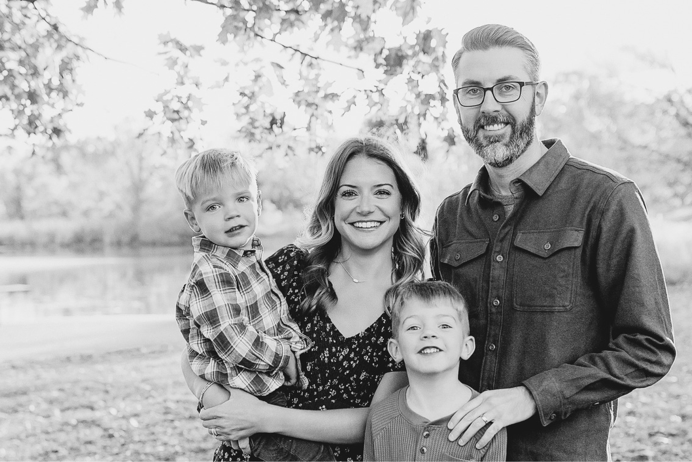

is a digital designer and developer who helps nonprofits, media organizations, and mission-driven teams build websites that are clear, resilient, and built to evolve. He blends strategy, user experience, and front-end development to create WordPress systems that support both storytelling and scale.
is a former journalist and brand designer whose editorial roots shape everything he builds — breaking problems down, understanding the audience, and designing with intention so that every project works clearly and effectively, not just looks good.
is a systems thinker who specializes in translating complex ideas into structured, usable digital experiences — grounded in research, shaped by data, and refined through iteration to serve organizations that need their work to communicate and connect.
is a trusted partner to organizations across clean energy, research, media, and advocacy — including the EFI Foundation, BW Research, Current, and the Center for News, Technology & Innovation — bringing a consistent framework of structure, clarity, and purpose to every engagement.
is a founding partner of Unrelated, a WordPress agency built on the belief that good digital work starts with intention and grows into something designed to last — drawing on two decades of cross-disciplinary experience to help mission-driven organizations rethink how they communicate online.
